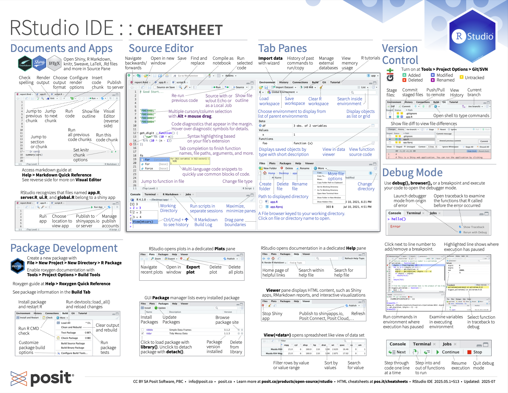
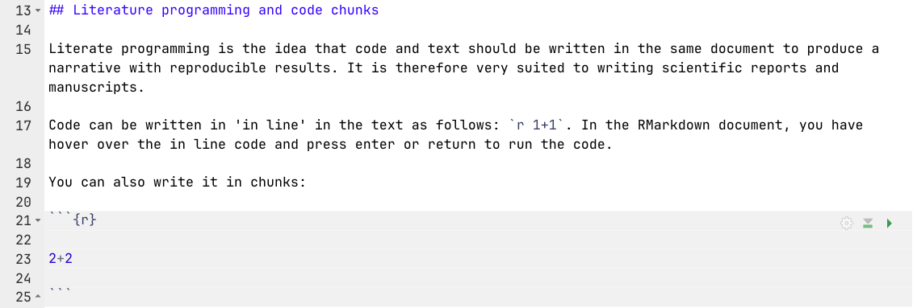
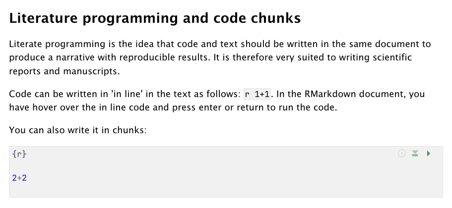
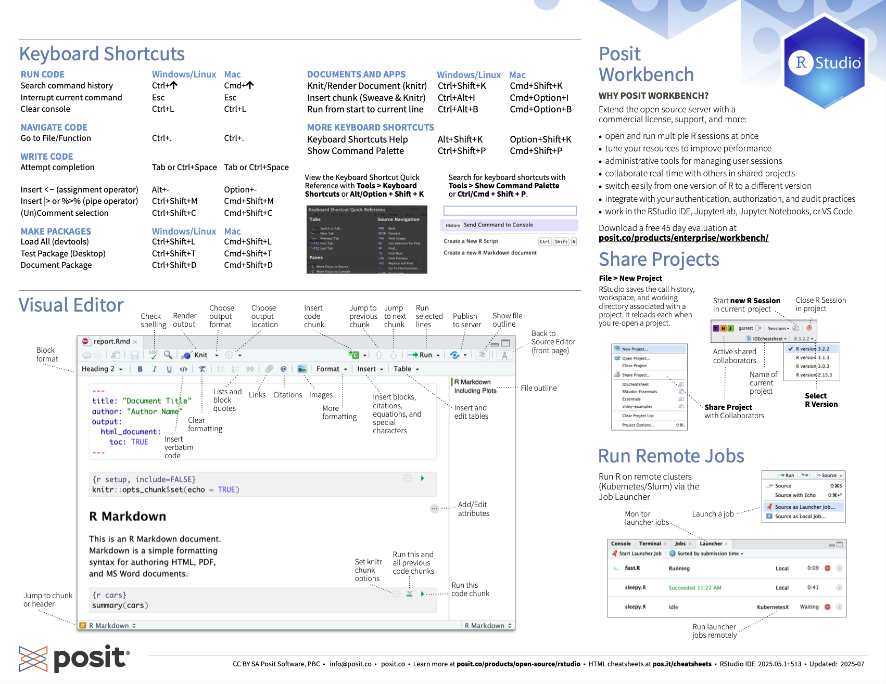
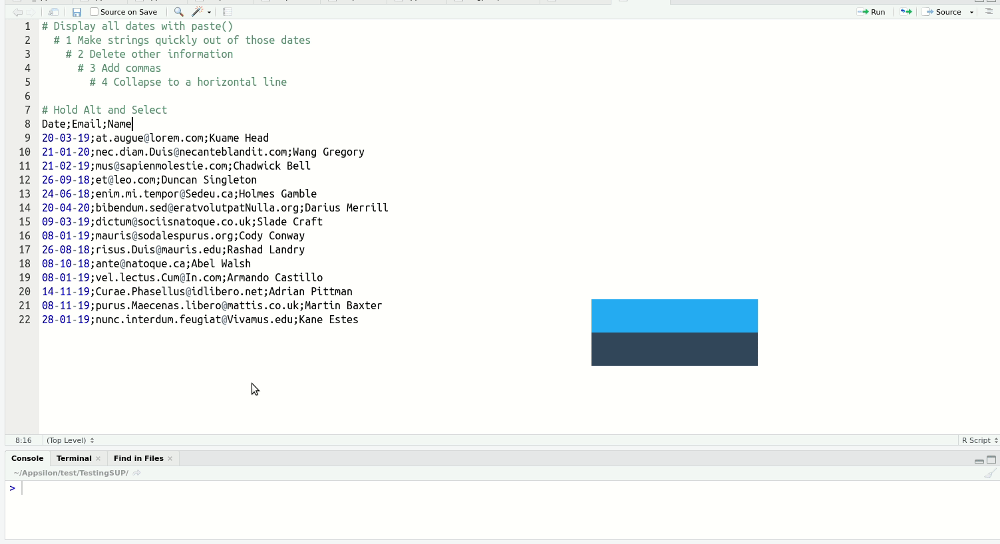
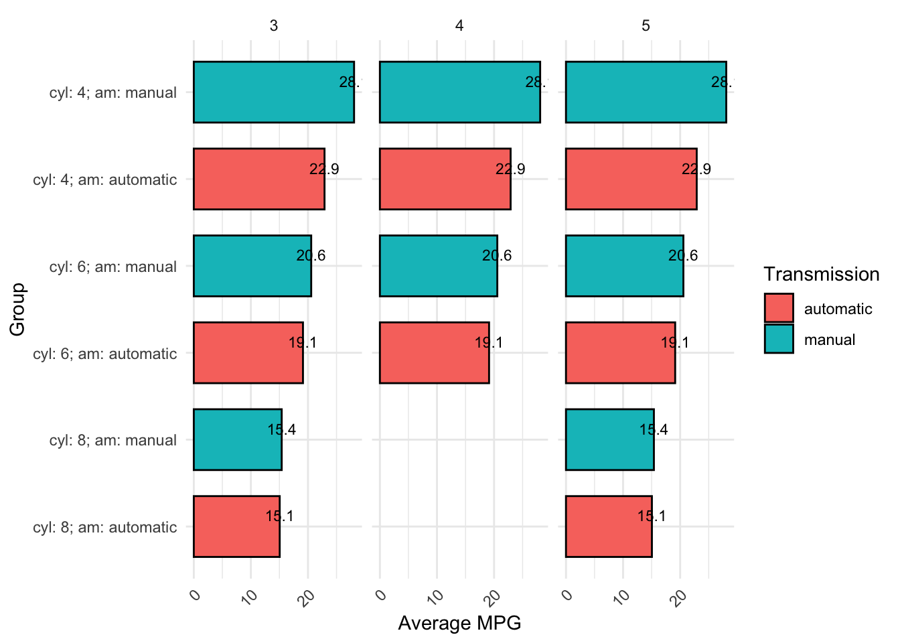

library(dplyr) # for %>%, mutate(), group_by(), summarise(), filter(), select()
library(ggplot2) # for the example plot
library(stringr) # for str_c()2 Fundamentals
This chapter introduces the basic building blocks you need before working with data in R: the difference between R, RStudio, and {tidyverse}; the parts of the RStudio interface; how to install and load packages; how to find help; how to create objects; and how to write code that other people (including future you) can read.
None of this is specific to psychology data, but all of it comes up every time you process data. In particular, managing your dependencies (the packages your code needs) and writing readable code are core parts of making your work reproducible, which we build on in the next chapter on Reproducible reports.
2.1 What’s the difference between Base R, RStudio IDE, and tidyverse?
This is an understandable point of confusion, so let’s clarify:
- Base R is the coding language that we learn in this course.
- RStudio IDE (Integrated Development Environment) is the application we use to write R code in. There are others but RStudio is the best option, although this could change in future.
- {tidyverse} is a set of R packages that enhance base R’s utility and usability, built around the concept of Tidy Data. We’ll learn about Tidy Data in another chapter. {tidyverse} arguably changes how we write R code so fundamentally that some people argue that R+{tidyverse} should be conceptualized as a meaningfully different language with different conventions and workflows.
There is a long-standing debate about whether base R (alone) or R+{tidyverse} is better. Thankfully, I can resolve this question for you immediately: R+{tidyverse} is better. All hail the One True Language, {tidyverse}.
2.2 Scripts vs. data, console vs. source
A script is a text file that contains R code that can be re-run. Technically, you can type R code directly into the RStudio ‘Console’ and run it from there. But that would be incredibly difficult, and we want reproducible code that can be rerun, modified, and shared, so we save them in scripts. There are multiple types of scripts, including .R files (R code and comments only) as well as RMarkdown (.Rmd) and Quarto files (.qmd), which can contain code, text, plots, tables, and data. We cover these more in a later chapter on Reproducible Reports.
The RStudio interface allows you to view and write code, as well as objects that are loaded and modified by your code such as datasets. Like code scripts, datasets are also stored locally on your machine, such as in .csv and .xlsx files.
Note that you can also have text-only markdown files (.md). These can contain text and markdown formatting (e.g., bold, italics, levels of heading, etc) but not executable code. ‘Readme’ files for projects are often saved as “README.md”. .md files can be opened and edited in RStudio and also other markdown editors such as typora.io. You may need to tell your computer how to open .md file (e.g., right click>‘open with’>RStudio).
2.3 RStudio IDE basics
Get familiar with the different parts of the RStudio IDE user interface with this cheat-sheet, which you can also download as a pdf here.

2.3.1 Source versus Visual editor
You can view a .qmd file’s raw code in the ‘Source’ viewer. The button for this appears on the top left above the code in RStudio.
Screenshot of Source editor mode:

You can also view a live preview of the rendered file, including tables, plots, math, etc., using ‘Visual’ editor mode, although there will be some simplifications compared to when you render a .html file. We’ll cover rendering in a later chapter.
Screenshot of Visual editor mode:

2.3.2 Keyboard shortcuts
Once you have learned about some of the concepts mentioned below in later chapters, it can be useful to come back to these cheat-sheets to learn the keyboard shortcuts for them.

2.3.3 Particularly useful shortcuts
Windows
- Insert Chunk: Ctrl + Alt + I
- Insert Pipe (
%>%): shift + Ctrl + M - Multi-line typing: Alt + Mouse click-and-highlight multiple lines, then type
- Move cursor by word instead of by character: Alt + arrows
- Highlight words: Shift + alt + arrows
- Fix Indentation: Mouse click-and-highlight multiple lines + Ctrl + I
- Comment out (#) multiple Lines: Mouse click-and-highlight multiple lines, then Shift + Ctrl + C
Mac
- Insert Chunk: Cmd + Alt + I
- Insert Pipe (
%>%): shift + Cmd + M - Multi-line typing: Alt + Mouse click-and-highlight multiple lines, then type
- Move cursor by word instead of by character: Option + arrows
- Highlight words: Shift + option + arrows
- Fix Indentation: Mouse click-and-highlight multiple lines + Cmd + I
- Comment out (#) multiple Lines: Mouse click-and-highlight multiple lines, then Shift + Cmd + C
You can also change or set up additional keyboard shortcuts in the “Tools>Modify keyboard shortcuts” drop down menu. For example, I have modified the shortcut to switch between Source viewer vs. Visual viewer to be “Cmd + `”.
Of the above, multi-line typing is the one that reliably gets an audible ‘whoa’ from audiences. It’s easier to see than explain:

When you get a bit more experienced with RStudio, I highly recommend you check out this blog post on shortcuts to know about more advanced features such as Function/Variable Extraction, Renaming in Scope, Code Snippets, and advanced search and find-and-replace.
2.4 Dependencies
Base R includes a powerful core of many useful functions, but it doesn’t include every tool you might need. To do specialized tasks you can install ‘packages’ that contain other functions and documentation to help you understand them. Once your code makes use of another package, it ‘depends’ on that package for the code to run, so we say that the package is a ‘dependency’ for that script.
Install packages from the most common database of R packages, CRAN, with install.packages(). Each package only needs to be installed once for it to be present on your computer, not every time the script runs.
In your local version of this .qmd script, highlight and run the code below to install these packages.
install.packages("tidyverse") # umbrella package that installs dplyr/tidyr/ggplot2 and others
install.packages("janitor")
install.packages("report")
install.packages("parameters")
install.packages("knitr")
install.packages("kableExtra")Some packages are instead on GitHub, and can be installed with devtools::install_github(). You’ll need to install the {devtools} package first to be able to use the install_github() function.
In your local version of this .qmd script, highlight and run the code below to install these packages.
install.packages("devtools")
devtools::install_github("ianhussey/psychdsish") # username/repository
devtools::install_github("ianhussey/truffle") # username/repositoryDependencies, i.e., packages that your code requires to run, can be loaded with library(). For tidiness, these should usually all be loaded at the start of your script. Each chapter in this book does this in a code chunk just after its introduction, with a comment saying what each package is used for. Equally, unused libraries should not be loaded.
library(tidyverse) # umbrella package that loads dplyr/tidyr/ggplot2 and others2.6 Namespace collisions: a common source of errors
Some common packages have identically named functions with different syntax. For example, if you load both {dplyr} and {MASS}, use of the function select() can refer to either dplyr::select() or MASS::select(), and your code might not run if the other package is loaded.
You can see if you have two identically named functions loaded by opening the help menu and seeing if more than one entry appears (e.g. with ?select()).
Avoid this by loading only the packages you need. Debug errors by thinking about these common namespace collisions:
| Function | tidyverse Source | Conflicting Package(s) | Notes |
|---|---|---|---|
| filter | dplyr | stats | stats::filter() is for signal processing (time series) |
| lag | dplyr | stats | Different semantics: dplyr::lag() is simpler |
| select | dplyr | MASS | MASS::select() is for step-wise regression |
| slice | dplyr | IRanges / S4Vectors | Common in Bioconductor workflows |
| rename | dplyr | MASS | MASS::rename() is deprecated, but may still load |
| summarise | dplyr | Hmisc | Hmisc::summarize() differs in behavior |
| intersect | dplyr | base | dplyr re-exports base::intersect() |
| union | dplyr | base | dplyr re-exports base::union() |
| setdiff | dplyr | base | dplyr re-exports base::setdiff() |
| count | dplyr | plyr | Different behavior/output in plyr::count() |
| desc | dplyr | IRanges | Conflicts with IRanges sorting |
| mutate | dplyr | plyr | Conflicts common when plyr is loaded |
| arrange | dplyr | plyr | Subtle differences; dplyr preferred |
Solve this issue either by specifying which package should be used each time you use the function (e.g., dplyr::select() instead of select()) or by specifying below your library() calls which version is preferred:
library(conflicted)
conflict_prefer(name = "select", winner = "dplyr")[conflicted] Will prefer dplyr::select over any other package.conflict_prefer(name = "filter", winner = "dplyr")[conflicted] Will prefer dplyr::filter over any other package.Once {conflicted} is loaded, R throws an error whenever you use a function name that more than one loaded package provides, rather than silently picking one. Here, filter() exists in both {dplyr} and {stats} (which R always loads), so we also tell R to prefer {dplyr}’s version. The code later in this chapter uses filter(), and would not run without this line.
2.7 Assignment of objects
R/RStudio has access to your computers files, but it only does exactly what you tell it to. If you have a data file (‘data.csv’) on your computer that you want to analyze in R, you have to first tell R to load that file. We will come back to this in the chapter on Loading Data.
Loading data from files is just one form of assignment: instructing R to create and set an ‘object’ to a given value or set of values, such as the contents of a file. This can also be much simpler, such as setting the variable name to “Ian”: name <- "Ian".
Assignment of objects is done via <- by convention.
# set the variable x to be the number 5
x <- 5
# print the contents of x
x[1] 5Technically you can also use =, but it’s best to avoid it.
# set the variable y to be the string "hello"
y = "hello"
# print the contents of y
y[1] "hello"It’s somewhat less well known, but you can also do “right-assignment” (->) instead of the much more common left assignment (<-). You should also avoid this.
# set the variable y to be the string "really? yes."
"really? yes." -> z
# print the contents of z
z[1] "really? yes."At this point, many books talk about objects, data types, and data structures. Personally, I find these to be too abstract for many users. They make more sense once you have some experience with data transformation. If you want to learn about them, here are some external resources from intro2r.com.
2.9 Code styling
Code can be written many different ways and still run. For example, both of the below code chunks run successfully and produce the same plot. Even without knowing how to read or write this code yet, it should be clear that the first one is much harder to read than the second due to inconsistent formatting and lack of comments:
mtcars %>% mutate(am=ifelse(am==1,
"manual","automatic"),gear=factor(
gear
))%>%
group_by(
cyl,am)%>%
summarise(avg_mpg=mean(mpg,na.rm=TRUE),
med_hp=median(hp),
count=n(),
.groups="drop"
)%>%
filter(avg_mpg>18|med_hp>100)%>%
mutate(flag=ifelse(avg_mpg>20&med_hp>110,TRUE,
FALSE),hp_per_cyl=med_hp/cyl)%>%arrange(desc(avg_mpg))%>%
left_join(
mtcars%>%count(cyl, gear),by="cyl" )%>%
mutate(label=str_c("cyl: ",cyl,"; am: ",am))%>%
ggplot(aes(x=reorder(
label,
avg_mpg
),y=avg_mpg,fill=
am))+geom_col(width = 0.7,
color = "black")+geom_text( aes( label = round(avg_mpg,1)),vjust = -0.5,size = 3)+
facet_wrap(~gear,scales="free_x")+theme_minimal(
)+theme(
axis.text.x=element_text(angle=45,hjust=1)
)+labs(
x="Group",y="Average MPG")+
guides(fill=guide_legend(title="Transmission"))+coord_flip()
# take the 'mtcars' dataset
mtcars %>%
# convert some of the existing data columns
mutate(am = ifelse(am == 1, "manual", "automatic"),
gear = factor(gear)) %>%
# create summaries
group_by(cyl, am) %>%
summarise(avg_mpg = mean(mpg, na.rm = TRUE),
med_hp = median(hp),
count = n(),
.groups = "drop") %>%
# retain only some rows
filter(avg_mpg > 18 | med_hp > 100) %>%
# create categories and ratios
mutate(flag = ifelse(avg_mpg > 20 & med_hp > 110, TRUE, FALSE),
hp_per_cyl = med_hp / cyl) %>%
# rank the rows
arrange(desc(avg_mpg)) %>%
# join in more columns from the original data set
left_join(mtcars %>% count(cyl, gear), by = "cyl") %>%
# annotate some variables
mutate(label = str_c("cyl: ", cyl, "; am: ", am)) %>%
# create plot
ggplot(aes(x = reorder(label, avg_mpg), y = avg_mpg, fill = am)) +
geom_col(width = 0.7, color = "black") +
geom_text(aes(label = round(avg_mpg, 1)), vjust = -0.5, size = 3) +
# create subplots
facet_wrap(~gear, scales = "free_x") +
# add plot theme
theme_minimal() +
theme(axis.text.x = element_text(angle = 45, hjust = 1)) +
labs(x = "Group", y = "Average MPG") +
guides(fill = guide_legend(title = "Transmission")) +
coord_flip()
General guidelines for how to style code are laid out in ‘style guides’, such as the Tidyverse Style Guide. These are conventions rather than strict rules.
More importantly, there are R packages that will re-style your code to be compliant with the Tidyverse Style Guide. They don’t work perfectly if your code starts out as particularly poorly formatted, but they help.
Install the {styler} R package:
install.packages("styler")
library(styler)You can then restyle any code you’ve written by highlighting the code (click+drag) and clicking “Addins”>“STYLER”>“Style selection”. Or style the whole file with “Style active file”.

2.10 Key functions
The main functions and tools covered in this chapter:
| Function or tool | Package | What it does |
|---|---|---|
install.packages() |
{utils} | Installs a package from CRAN. Only needs to be run once per computer. |
devtools::install_github() |
{devtools} | Installs a package from a GitHub repository. |
library() |
{base} | Loads an installed package so its functions can be used in this session. |
? |
{utils} | Opens the help page for a function, e.g., ?select. |
:: |
{base} | Uses a function from a specific package without loading it, or to avoid a namespace collision, e.g., dplyr::select(). |
conflict_prefer() |
{conflicted} | Says which package’s version of an identically named function should be used. |
<- |
{base} | Assigns a value to an object, e.g., x <- 5. |
# |
{base} | Starts a comment: everything to its right on that line is ignored when the code runs. |
| Styler addin | {styler} | Restyles selected code, or a whole file, to follow the Tidyverse Style Guide. |
2.11 Exercises
Check your learning with the following questions. Exercises that involve running code should be done in your local copy of this chapter’s .qmd file (see the Introduction for how to get a copy).
2.11.1 Check your understanding
Answer the questions, then click the button at the bottom to check your answers.
- Which of these is a set of R packages, rather than a language or an application?
- Code typed directly into the console is saved so that you can rerun it later.
- Which is the conventional way to assign the value 5 to the object x?
- After running x <- 3 and then x <- x * 2, what does x contain?
- If you load {dplyr} and then {MASS}, select() will use the {dplyr} version.
- R ignores everything to the right of # on a line of code.
NoteClick to show explanations
- {tidyverse} is a set of packages that extend base R. Base R is the language, RStudio is the application you write code in, and Quarto is the system for making reports from .qmd files.
- False. Code run in the console is not saved anywhere you can easily rerun it. Write your code in a script (.R or .qmd) so that it can be rerun, modified, and shared.
<-is the conventional assignment operator in R.=and->also work but are best avoided, and==tests whether two values are equal rather than assigning anything.- The right-hand side is calculated first using the current value of ‘x’ (3), and the result (6) is then assigned to ‘x’, replacing the old value.
- False. The package loaded last masks identically named functions from packages loaded earlier, so
select()would refer toMASS::select(). Usedplyr::select()orconflict_prefer()to be explicit. - True. This is how comments work, both on their own lines and beside code.
What is the difference between installing a package and loading it?
NoteClick to show answer
Installing a package (install.packages()) downloads it to your computer. You only need to do this once per computer, not every time your script runs. Loading a package (library()) makes its functions available in the current R session, and needs to happen every time the script runs. That’s why library() calls belong in your script, but install.packages() calls should not run every time.
What is a ‘dependency’, and why should you load all of a script’s dependencies at the top of the script?
NoteClick to show answer
A dependency is a package that your code needs in order to run. Loading them all at the top makes it easy for you and others to see at a glance which packages need to be installed before the code will run, and makes sure they are loaded before any code that uses them.
What is the difference between a .R file, a .qmd file, and a .md file?
NoteClick to show answer
A .R file contains only R code and comments. A .qmd (Quarto) file can contain text, code, and the code’s output, such as tables and plots, and can be rendered to a .html file. A .md (markdown) file contains formatted text but no code that can be run.
You get an unexpected error from a function that you know works, e.g., select(). What might be causing it, and what are two ways to fix it?
NoteClick to show answer
A namespace collision: another loaded package has a function with the same name, and R is using that version instead. You can check with the help menu (e.g., ?select), which will show more than one entry. Fix it either by specifying the package each time you use the function (e.g., dplyr::select()), or by stating which version you prefer with conflict_prefer() from {conflicted}. Loading only the packages you need also makes this less likely.
Which of these two comments is more useful, and why? # remove participants under 18 or # filter rows where age is less than 18
NoteClick to show answer
The first one. The code itself already shows how it works (filtering rows on age), so the second comment just repeats it. The first one explains why the code exists, which the code alone can’t tell you.
2.11.2 Practice
In your local copy of this chapter’s .qmd file, complete the tasks below. No solutions are provided for these tasks, to reduce the temptation to peek or copy-paste. Use the hints if you get stuck.
2.11.2.1 Fix style, indentation, and white space
If you’re reading this as an eBook on the website, create a new .R file in RStudio on your computer (‘File>New File>R script’), and copy and paste the code below into that file.
- Restyle the code with the Styler Addin.
- You can undo this with Ctrl + z (Windows) or Cmd + z (Mac) if you want to see it before/after again.
- Compare the result with the well-styled version earlier in the chapter. What did {styler} fix, and what did it not do (e.g., add comments)?
library(styler)
library(dplyr)
library(ggplot2)
library(stringr)
mtcars %>% mutate(am=ifelse(am==1,
"manual","automatic"),gear=factor(
gear
))%>%
group_by(
cyl,am)%>%
summarise(avg_mpg=mean(mpg,na.rm=TRUE),
med_hp=median(hp),
count=n(),
.groups="drop"
)%>%
filter(avg_mpg>18|med_hp>100)%>%
mutate(flag=ifelse(avg_mpg>20&med_hp>110,TRUE,
FALSE),hp_per_cyl=med_hp/cyl)%>%arrange(desc(avg_mpg))%>%
left_join(
mtcars%>%count(cyl, gear),by="cyl" )%>%
mutate(label=str_c("cyl: ",cyl,"; am: ",am))%>%
ggplot(aes(x=reorder(
label,
avg_mpg
),y=avg_mpg,fill=
am))+geom_col(width = 0.7,
color = "black")+geom_text( aes( label = round(avg_mpg,1)),vjust = -0.5,size = 3)+
facet_wrap(~gear,scales="free_x")+theme_minimal(
)+theme(
axis.text.x=element_text(angle=45,hjust=1)
)+labs(
x="Group",y="Average MPG")+
guides(fill=guide_legend(title="Transmission"))+coord_flip()
NoteClick to show hint
Install {styler} first if you haven’t already (see the Code styling section). Highlight the code, then click “Addins”>“STYLER”>“Style selection”. If you can’t see the Addins menu item, it’s in the toolbar at the top of RStudio.
2.11.2.2 Assign, comment, and get help
- Assign your age to an object called
ageand your name to an object calledname, then print both. - Create a new object
age_in_monthsfromage, and print it. - Add a comment above each line that explains why the code is there.
- Open the help page for
mean(). What does itsna.rmargument do?
NoteClick to show hint
Use <- for assignment, and put text (but not numbers) in quotation marks. Typing an object’s name on its own line prints it. Use ? to open a help page, and look at the ‘Arguments’ section.
2.8 Comments
Comments in R start with the hash symbol
#. Everything to the right of#on a line of code is ignored by R when the code is run.Comments are used to explain what the code does or leave reminders for future readers, including yourself.
Good comments explain to the reader why this code exists rather than explaining what it does or how. Sometimes, particularly complex code can benefit from explanations of how it works. More often, the code itself can be figured out, but not why it is needed at all. Convey why the code exists with your comments. For example,
# remove outliersis a good comment that tells you the ‘why’ of the code without getting in to ‘how’, which the code itself should explain.